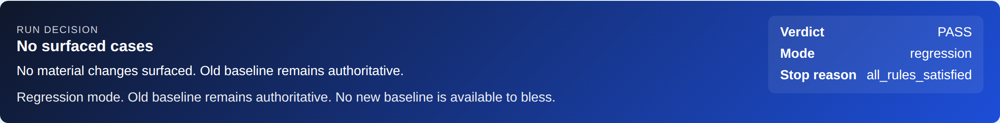

2026-05 Showcase · Roboharness
Roboharness
给 AI Agent 装上"自己判断自己工作"的能力
这个项目是 给 AI Agent 用的，也是 用 AI Agent 做出来的
MiaoDX · 直觉机器漫谈
github.com/MiaoDX/roboharness · miaodx.com/roboharness/
2026-05
github.com/MiaoDX/roboharness · miaodx.com/roboharness/
2026-05
标题页节奏快，不超过 30 秒。一句话定位 + 双线钩子，把'用 agent 做'+'为 agent 做'埋进去，后面页 15 收回。
section/1 · 一句话定义
机器人开发里
AI Agent 能不能长时间自主跑
关键不是模型多聪明
是它能不能 —— 自己判断「这一步成了没」
是它能不能 —— 自己判断「这一步成了没」
整个 talk 围绕这个判断展开。Agent 能写代码、能调参、能跑仿真 —— 这些早就不是瓶颈，卡住的是它不知道自己做的事到底成没成。今天会用一个我们刚做完的真实案例证明：补上这层判断能力，agent 能完成相当复杂的、原本需要人盯几天的工程任务。
section/2 · 钩子 · 两个月前的承诺
两个月前那张图
2026-03 · 内部分享最后一页
下一步，让 AI 完全接手 这个测试自动化
那张图当时是一个 vision
今天来汇报 —— 这件事我们做到了
![Figure 1 placeholder — 两个月前那张 vision 图](data:image/svg+xml,%3Csvg%20xmlns%3D%22http%3A%2F%2Fwww.w3.org%2F2000%2Fsvg%22%20width%3D%22860%22%20height%3D%22520%22%3E%3Crect%20width%3D%22860%22%20height%3D%22520%22%20fill%3D%22%23e9e2d4%22%2F%3E%3Crect%20x%3D%221%22%20y%3D%221%22%20width%3D%22858%22%20height%3D%22518%22%20fill%3D%22none%22%20stroke%3D%22%23b8a99a%22%2F%3E%3Ctext%20x%3D%2232%22%20y%3D%2240%22%20font-family%3D%22monospace%22%20font-size%3D%2214%22%20font-weight%3D%22600%22%20fill%3D%22%238a3a3a%22%20letter-spacing%3D%223%22%3EFIGURE%20%231%20%C2%B7%20TODO%3C%2Ftext%3E%3Ctext%20x%3D%22430%22%20y%3D%22250%22%20font-family%3D%22sans-serif%22%20font-size%3D%2224%22%20font-weight%3D%22500%22%20fill%3D%22%231c1612%22%20text-anchor%3D%22middle%22%3E%E4%B8%A4%E4%B8%AA%E6%9C%88%E5%89%8D%E9%82%A3%E5%BC%A0%20vision%20%E5%9B%BE%3C%2Ftext%3E%3Ctext%20x%3D%22430%22%20y%3D%22290%22%20font-family%3D%22sans-serif%22%20font-size%3D%2216%22%20fill%3D%22%234a3a2a%22%20text-anchor%3D%22middle%22%20font-style%3D%22italic%22%3EAI%20%E5%AE%8C%E5%85%A8%E6%8E%A5%E6%89%8B%E6%B5%8B%E8%AF%95%E8%87%AA%E5%8A%A8%E5%8C%96%20%28%E5%86%85%E9%83%A8%E5%88%86%E4%BA%AB%202026-03%29%3C%2Ftext%3E%3Ctext%20x%3D%2232%22%20y%3D%22490%22%20font-family%3D%22monospace%22%20font-size%3D%2211%22%20fill%3D%22%238a7960%22%3Ereplace%20with%3A%20images%2Ffig1-old-vision.png%3C%2Ftext%3E%3C%2Fsvg%3E)
图 #1 · 待补 · images/fig1-old-vision.png
这一页就是钩子。讲快，往下走。图 #1 占位需要在演讲前替换成 2026-03 内部分享最后一张 slide 的截图。
section/2 · 当时的卡点
当时为什么做不到
Unitree G1 + GR00T Decoupled WBC · 下肢 RL + 上肢 IK 的混合架构 · 2025-11
不是瓶颈
Agent 改控制代码 ✓
控制器代码、参数调整、报错修复 —— 这些早已不是瓶颈
真正卡点
Agent 的判断 ✗
夹爪夹住没？方块滑了没？姿态合理吗？
日志看不出来，必须看画面
日志看不出来，必须看画面
工程师只能盯着 —— agent 跑一轮，人看一眼；再跑一轮，再看一眼
G1 + GR00T Decoupled WBC = 2025-11 那版下肢 RL/上肢 IK 的混合架构做抓取。改代码不是瓶颈，判断才是。
section/2 · 关键洞察
这不是 算力 问题
是 注意力 问题
是 注意力 问题
瓶颈 不在 GPU · 在工程师的注意力
Agent 要真自主 —— 唯一的路是让它自己有判断依据
过去两个月我们做的就是这件事。过渡到下一页：下面看一个真实案例 —— SONIC 升级。
section/2 · 兑现 · SONIC 升级
兑现 —— 三阶段工作流跑下来
phase 01 · 人主导
Plan
详尽计划
每一步成 / 不成 判据明确
每一步成 / 不成 判据明确
phase 02 · Agent 接管 · 工程师不在场
Execute
harness 每改一步自跑 grasp pipeline
metric + 视觉证据自评
Codex CLI
metric + 视觉证据自评
Codex CLI
/goal 锚定长程phase 03 · 人回来
Review
先看 metric · metric OK 再看视觉
最后人工 E2E
最后人工 E2E
真实例子→
2026-02-19 NVIDIA 发布 GEAR-SONIC · 不是版本升级，是范式切换
Decoupled WBC (RL + IK 混合) → GEAR-SONIC (单一 Transformer 基础模型)
整条控制栈底层重写 —— agent 连续自主跑了几个小时，工程师全程不在场
三阶段讲清楚：Plan 人主导；Execute 完全 agent，工程师不在场，每改一步 harness 自跑 + metric/视觉自评 + Codex CLI /goal 锚定长程目标；Review 人回来，metric→视觉→E2E。Q&A 备好：为什么不是直接 N1.7 —— SONIC 是 2 月 19 日发布，N1.7 4 月才商业 release，时间线对得上。/goal 需要 codex-cli 0.128.0+ /experimental 打开。
section/2 · 校准
不是 Agent 突然变聪明
是给了它判断自己工作好坏的工具
让 agent 跑得久 —— 不靠模型变神
靠 "越过边界时会被挡住、边界内时能自己往前走"
靠 "越过边界时会被挡住、边界内时能自己往前走"
roboharness · 抽出独立 repo · github.com/MiaoDX/roboharness
这一页是过渡 + 校准。把"模型变神"这种解读挡掉，把"trust boundary"埋下（页 15 收）。内部抓取项目跑通后我们发现 —— 任何需要 agent 长时间自主跑机器人代码的场景都缺这一层，所以抽成独立 repo。
section/3 · 双轨证据 · 案例 A
案例 A · qpos 索引
仿真 · commit 102a593
| 证据通道 | 判定 | 解释 |
|---|---|---|
| 截图 | ✓ 看起来抓住了 | 画面 OK · Agent 自己也判 PASS |
| 物理约束 metric | ✗ cube z ≈ 0 | 加上 --assert-success 后才发现 —— 根本没抬起来 |
根因→
agent 假设 MuJoCo qpos 里 slide joint 在前，用了
qpos[5] · 实际 free joint 在前，正确是 qpos[2]
教训方向 —— 光看图不够，metric 是兜底
60 秒以内讲完，为下一页 (B 案例) 做铺垫。两个案例是反向对称的。
section/3 · 双轨证据 · 案例 B
案例 B · 拇指朝下抓 bottle
真机 Unitree G1
初始唯一 metric · 抓取中心点 vs bottle 中心点 3D 距离
Agent 规划出的解 —— 整个手反着抓，拇指朝下而不是朝上
- · metric ✓ 完全 PASS · 3D 距离确实在阈值内
- · visual harness 一打开图 —— 谁都看得出来不对
第三幕→
加了新 metric · 手部 / 拇指朝向 —— 这种失败模式永久关掉
教训方向 —— 光看 metric 不够
visual 才能挡住"数学上对、物理上荒谬"的解
![Figure 3 placeholder — 拇指朝下抓 bottle 对比图](data:image/svg+xml,%3Csvg%20xmlns%3D%22http%3A%2F%2Fwww.w3.org%2F2000%2Fsvg%22%20width%3D%22860%22%20height%3D%22520%22%3E%3Crect%20width%3D%22860%22%20height%3D%22520%22%20fill%3D%22%23e9e2d4%22%2F%3E%3Crect%20x%3D%221%22%20y%3D%221%22%20width%3D%22858%22%20height%3D%22518%22%20fill%3D%22none%22%20stroke%3D%22%23b8a99a%22%2F%3E%3Ctext%20x%3D%2232%22%20y%3D%2240%22%20font-family%3D%22monospace%22%20font-size%3D%2214%22%20font-weight%3D%22600%22%20fill%3D%22%238a3a3a%22%20letter-spacing%3D%223%22%3EFIGURE%20%233%20%C2%B7%20TODO%3C%2Ftext%3E%3Ctext%20x%3D%22430%22%20y%3D%22250%22%20font-family%3D%22sans-serif%22%20font-size%3D%2224%22%20font-weight%3D%22500%22%20fill%3D%22%231c1612%22%20text-anchor%3D%22middle%22%3E%E6%8B%87%E6%8C%87%E6%9C%9D%E4%B8%8B%E6%8A%93%20bottle%20%E5%AF%B9%E6%AF%94%E5%9B%BE%3C%2Ftext%3E%3Ctext%20x%3D%22430%22%20y%3D%22290%22%20font-family%3D%22sans-serif%22%20font-size%3D%2216%22%20fill%3D%22%234a3a2a%22%20text-anchor%3D%22middle%22%20font-style%3D%22italic%22%3E%E5%B7%A6%3A%20%E6%AD%A3%E5%B8%B8%E6%8A%93%20%20%20%20%20%E5%8F%B3%3A%20%E5%8F%8D%E7%9D%80%E6%8A%93%20%28metric%20PASS%20%C2%B7%20visual%20NG%29%3C%2Ftext%3E%3Ctext%20x%3D%2232%22%20y%3D%22490%22%20font-family%3D%22monospace%22%20font-size%3D%2211%22%20fill%3D%22%238a7960%22%3Ereplace%20with%3A%20images%2Ffig3-thumb-down-grasp.png%3C%2Ftext%3E%3C%2Fsvg%3E)
图 #3 · 待补 · 左 正常抓 · 右 拇指朝下 · images/fig3-thumb-down-grasp.png
90 秒。图 #3 是这一页的灵魂，必须有。一句方法论：这是 reward hacking 的经典模式 —— agent 不只会犯错，更危险的是它会找出弱 metric 下数学 PASS 但语义荒谬的解。
section/3 · 双轨证据 · 闭环
metric 和 visual 不是冗余
是闭环里两个不同角色
role · 发现器
Visual Harness
抓 unknown unknowns
发现预先没想到的失败模式
发现预先没想到的失败模式
role · 稳态护栏
Metric Gate
精确、快、确定性
已知失败模式自动挡住
已知失败模式自动挡住
闭环动作
Promote
每发现一个新坑 → 从 visual 那侧 搬到 metric 那侧
把失败永久转成可量化护栏
把失败永久转成可量化护栏
这就是 Mitchell Hashimoto 讲的 engineer the harness
字面意义在做的事
字面意义在做的事
section/4 · 自主率
得投入多少？之后能多自主？
投入 vs 自主率 · 分开看
1×
Harness 调试期 · 一次性成本
写契约 · 跑 seeded good/bad/ambiguous corpus · 调阈值
95%+
Harness 稳态期 · Agent 自己 PASS/FAIL
只有真正新颖 / 复杂的场景才需要人最后兜底
数小时
SONIC 升级长程任务跑下来
大部分 per-step 判断根本不需要人介入
CALLBACK→
SONIC 升级属于"真正新颖"那一类 —— 所以才有 Plan / Review 两端的人
两件事要分开讲：调试期是一次性成本；稳态期 95%+ agent 自己 PASS/FAIL。这也是为什么 SONIC 那种几小时长程任务能跑 —— 大部分 per-step 判断根本不需要人介入。
section/4 · 现场 Demo
现场切到浏览器

live · Run Decision banner · 点击放大
三个看点
① 顶部 banner
Run Decision
PASS — 10/10 constraints satisfiedagent 跑完一轮的整体判决
② 核心区
No surfaced cases
没有任何需要人看的事情
clean 时工程师根本不用打开
数小时无人值守的来源
clean 时工程师根本不用打开
数小时无人值守的来源
③ Constraint Evaluation
Metric Gate 具体形态
10 条物理约束 · Expected / Actual / Severity
cube_height_mm > 5.0 actual 143.4网络不稳时切到本地备份截图 · images/demo-run-decision.png · images/demo-constraint-eval.png
留够 90 秒，全场最有冲击力。指给观众的顺序（每段约 10-20 秒）：① 顶部 Run Decision banner —— 'PASS — 10/10 constraints satisfied'，agent 跑完一轮的整体判决；② 'No surfaced cases. No material changes surfaced.' —— clean 的时候工程师根本不用打开这一页，数小时无人值守就是这么来的；③ 右边 Surfaced 0 / Suppressed 1 / Unchanged 1 —— escape hatch，只有 Surfaced > 0 才需要人看；④ Constraint Evaluation 表 —— metric_gate 的具体形态，10 条物理约束都有 Expected / Actual / Severity；⑤ Phase Timeline —— 每个 phase 三视角截图 + grip err / contacts / alarms，这是 visual harness 的数据形态；⑥ 回到顶部 —— 所有数据合起来得出 PASS，agent 自己读自己判决。投屏挂了切到 images/demo-fallback-*.png 按 1/2/3 顺序换页。
section/5 · repo 演化
抽成 repo 之后 · 3 周
v0.3.0 / 0.3.1 已发到 PyPI · 又长了两件事
2026-05-20 上线
❶ Agent Visual Review v1
同一个 coding agent 在 bounded manifest 边界内做视觉评审 —— 不另起 VLM 服务
每个 visual dimension 必须声明
→ 把"agent 看图"也做成有契约的、不能滥用的机制
每个 visual dimension 必须声明
metric_fallback 或 why_not_metricized · 否则 fail-closed→ 把"agent 看图"也做成有契约的、不能滥用的机制
2026-05-20 上线
❷ Python contract → SKILL.md
contract.py 是手写真值roboharness contract generate → SKILL.md / schemas / stubs→ Agent 自己加载契约约束自己
判断边界从 run-time 扩到 design-time
Agent 不是变聪明 —— 是约束它的契约写得更清楚了
Agent 不是变聪明 —— 是约束它的契约写得更清楚了
这两个 feature 都是 5 月 20 日刚 commit 的，要诚实 —— "刚上、小规模验证中"，不需要进 demo。
section/5 · sidenote · by agents
Sidenote · 这个 repo 自己也是 agent 做的
139
commit · 100% AI 完成
总数
65
AI solo
Claude / Codex 直接 author
66
AI 协作
co-authored-by trailer
8
小改动漏加 trailer
gitignore / README 链接 / 几行 docs 修补
工作流速描
Opus 聊出 roadmap → 拆 GitHub issue → routine 每小时自动解 issue → 人 review PR · 手机上就能完成全套
节奏快，2 分钟内。4 routine 设计细节这里不展开 · 公众号上有完整文章。Q&A 备好：如果有人 git log | grep claude 发现 8 个没 trailer —— "我们用 co-authored-by trailer 标记，偶尔小改动忘了加；这些都是 gitignore 之类的杂活"。
section/6 · 收口 · trust boundary
两件事 —— 同一个工程思路
"用 agent 做" + "为 agent 做" 背后都是 trust boundary
| 层面 | For agents · 产品层 | By agents · 开发层 |
|---|---|---|
| 边界形态 | contract · metric_gate · visual review manifest · approval report | branch namespace · 4 routine 隔离 |
| 消息通道 | structured evidence · 自动 surface / suppress | GitHub comment as msgbus · PR template / CI gate |
| 越界后果 | fail-closed · 被挡住 | 被锁在前缀内 · 不互踩 |
Agent 越过边界 → 被挡住 · Agent 边界内 → 能自己往前走
信任不是建立在"agent 足够好"上 —— 是建立在"agent 越过边界时一定会被挡住"上
信任不是建立在"agent 足够好"上 —— 是建立在"agent 越过边界时一定会被挡住"上
把页 1 的钩子（"给 agent 用 + 用 agent 做"）和页 7 的"越过边界会被挡住"两根线在这里合并收口。
section/6 · takeaway · 工程师
实践 · 工程师向
两个能直接拿走的实践
practice 01
契约先于 prompt
把目标 / 不可改部分 / 异常行为写成结构化契约
不能 ground 的 prompt 别让 agent 跑
节省的不是 token · 是审查时间
不能 ground 的 prompt 别让 agent 跑
节省的不是 token · 是审查时间
practice 02
给 Agent 真正的判断依据
metric + visual 双轨 · 缺一不可
· qpos 案例 → visual 没救你 · metric 救
· 拇指朝下 → metric 没救你 · visual 救
发现一个新失败模式 → promote 到 metric
· qpos 案例 → visual 没救你 · metric 救
· 拇指朝下 → metric 没救你 · visual 救
发现一个新失败模式 → promote 到 metric
这就是 engineer the harness 字面意思 —— 也是我们日常的工作流
section/6 · takeaway · 宏观
判断 · 宏观向
两个判断
judgment 01
瓶颈已经换地方了
"模型够不够好" → "Agent 能不能自己判断"
这件事一旦解决 · 研发流程长度直接解锁
SONIC 升级就是证据
这件事一旦解决 · 研发流程长度直接解锁
SONIC 升级就是证据
judgment 02
方向是契约工程 · 不是堆模型
同模型 + 好契约 > 更强模型 + 没契约
—— 这是杠杆点所在
—— 这是杠杆点所在
section/6 · 边界
当前边界
已验证范围 · 仍在补的部分
| 已验证 | MuJoCo + G1 · 抓取 / 到达 / 移动 类任务 |
| 补充中 | Contract preset 数量还在补 |
| 硬件验证 | Sim-to-real 真机 evidence 通道 |
| 小规模验证 | Agent Visual Review v1 刚上 (2026-05-20) |
30 秒，快速诚实带过，不卖惨。说这些是因为 —— 如果你想在自己项目里用，这是我们目前真实的能力边界。
让 Agent 跑得久 —— 不是 Agent 变神
是把 "Agent 越过边界时会被挡住" 这件事做扎实
是把 "Agent 越过边界时会被挡住" 这件事做扎实
— Q & A —
公众号
直觉机器漫谈
直觉机器漫谈

个人微信
Dongxu-Miao
Dongxu-Miao
缪东旭 · MiaoDX
github.com/MiaoDX/roboharness · miaodx.com/roboharness/
本场分享准备过程开源：github.com/MiaoDX/LIP/tree/main/ai-coding/roboharness-self-evaluating-agents
github.com/MiaoDX/roboharness · miaodx.com/roboharness/
本场分享准备过程开源：github.com/MiaoDX/LIP/tree/main/ai-coding/roboharness-self-evaluating-agents